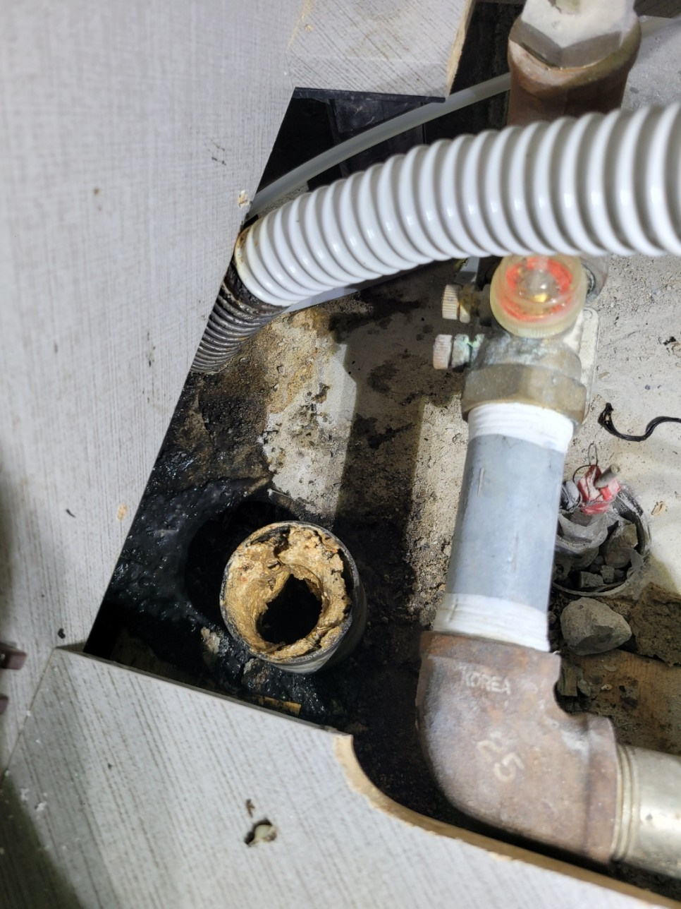
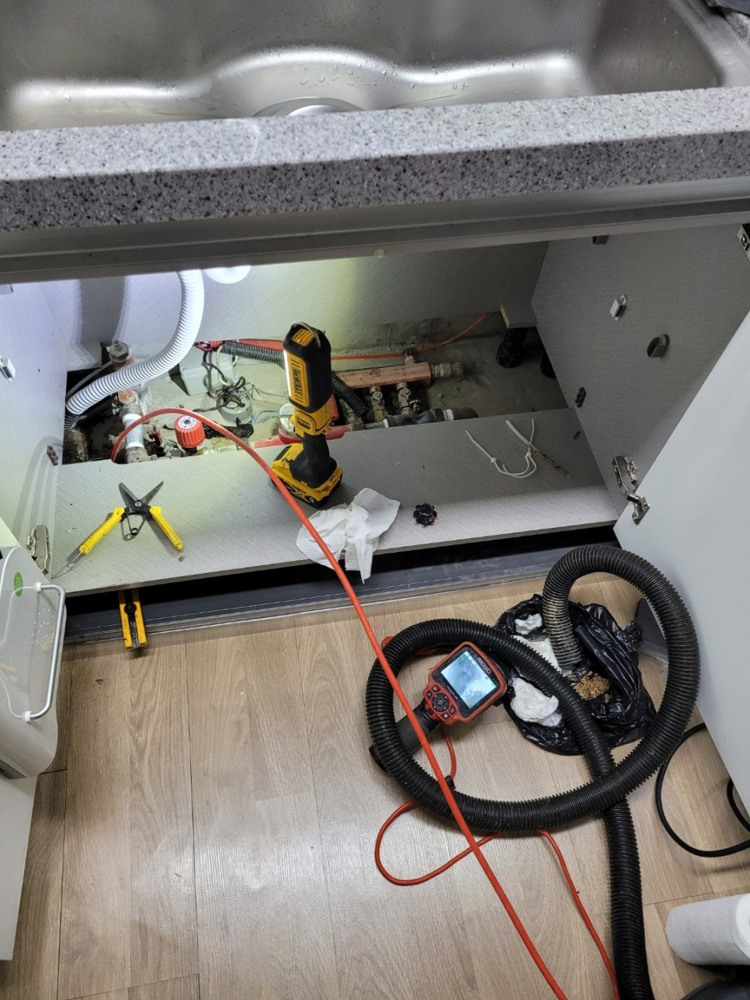
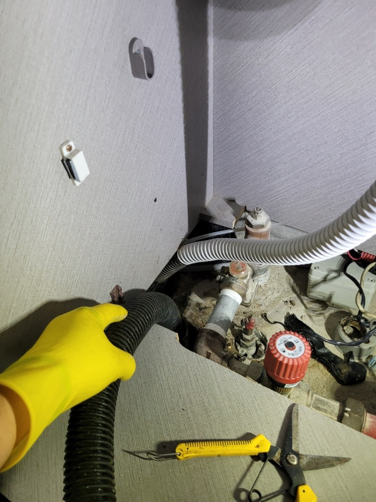
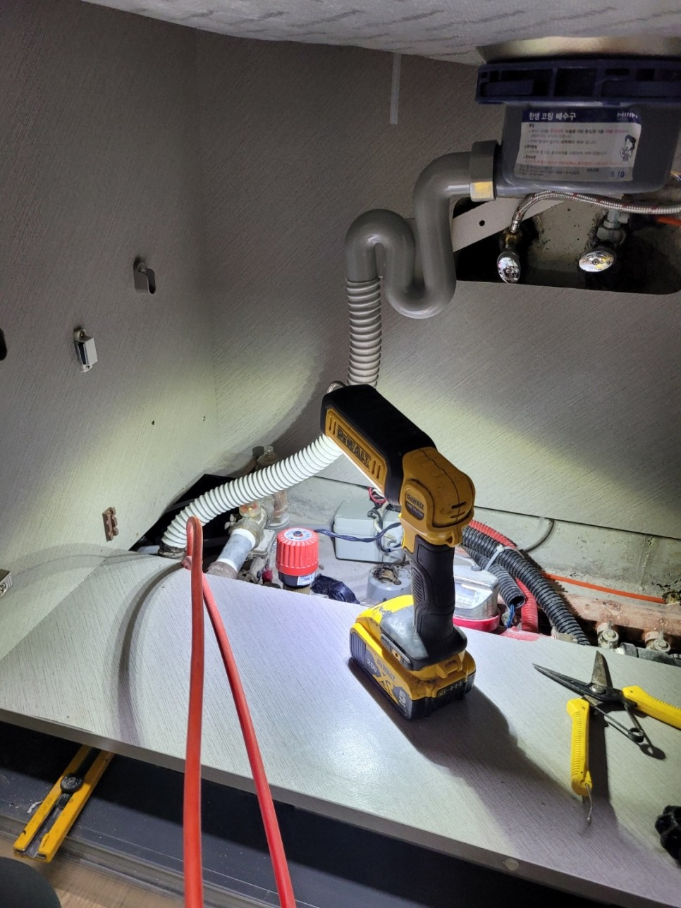
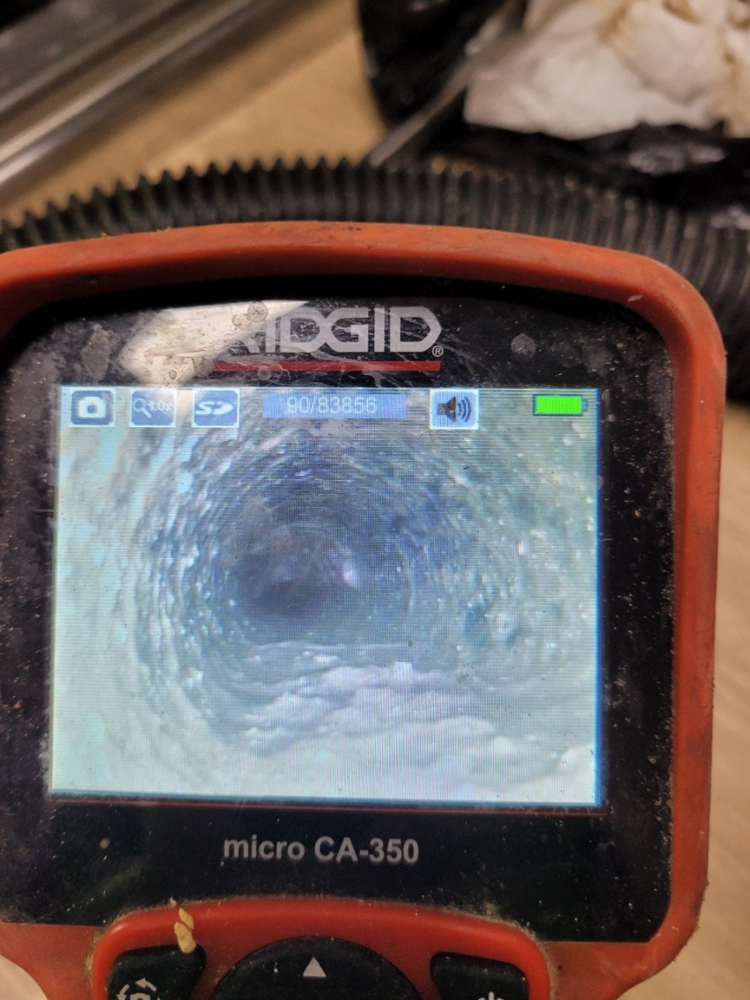
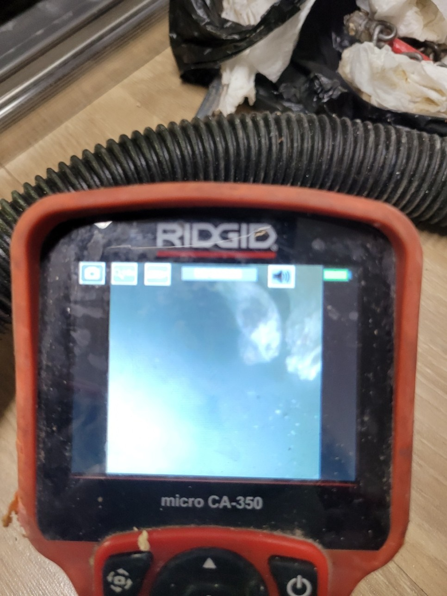

🏠 용인 수지하수구막힘 고기리 성복동 하수구역류 시원하게 해결
용인 싱크대막힘 전문 시공 후기

📋 작업 개요
- 위치: 용인
- 서비스 유형: 싱크대막힘, 하수구막힘, 배관막힘, 집수정막힘, 누수수리, 역류해결, 뚫는업체, 배관청소, 고압세척
- 작업 일시: 2023. 2. 27. 0:56
- 업체명: 하수구수사대 (010-5615-2118)
🔍 문제 상황
안녕하세요. 하수구수사대입니다 반갑습니다!
집이나 밖에 있는 하수구에 물과 같이 이물질이 넘쳐나면서 지저분하게 되어있는 것을 본 적 있으실 겁니다. 이러한 것을 역류라고 하는데 하수구 내부에 이물질이 많이 쌓이게 되어 막히다가 해결하지 않으면 역류나 누수 등 물난리가 나는 상황이 생겨날 수 있습니다.
용인 수지하수구막힘 고기리 성복동 하수구역류로 인하여 신속히 현장을 찾아갔는데요.
싱크대 하수구가 막힌 건 알았지만 시간이 지나면 물이 빠지기는 하니 별거 아니라고 넘기셨다가 갑자기 바닥 부근에 물이 축축하게 내려온 걸 발견하셨다고 합니다. 집 주방에는 방수 처리조차 되지 않는 곳이 대부분이라서 당황하실 수밖에 없으실 겁니다. 하수구 문제는 이렇게 긴급한 상황이 자주 있으므로 저희 하수구수사대는 실시간으로 불러주시면 바로 신속하게 출동하고 있습니다.

🔎 원인 분석
💡 전문가 진단: 용인 수지하수구막힘 고기리 성복동 하수구역류 현장에
용인 수지하수구막힘 고기리 성복동 하수구역류 현장에
도착하자마자 물기부터 신속하게 제거하고 내시경 카메라를 넣어 싱크대 역류를 일으킨 원인이 뭔지 고객님과 함께 살펴보았습니다. 육안으로 볼 수 있는 구간은 적지만 내시경 카메라는 깊게 들어가기 때문에 이물질이 가득 쌓여있는 부분을 시간이 얼마 지나지 않아 찾을 수 있었습니다.
수직으로 배관이 내려간 다음에 뒤쪽으로 엘보로 꺾이는 구간에서부터 가로로 누운 배관에 전체적으로 이물질이 꽉 차 있었습니다. 플렉스샤프트라는 스케일링 장비를 가지고 이물질을 가차 없이 분쇄하며 빠른 속도로 깊이 들어가 하수구 배관을 뚫어드렸습니다.
하지만 배관이 밖에 나가서 빠지는 메인 관까지도 이물질로 막혀 있는 것이 내시경 카메라에 포착되었는데요. 만약 바깥 집수정까지 막히게 되었다면 아무리 실내 배관을 깔끔하게 청소한다고 해도 재발 위험이 있어 밖으로 나와 검사를 하였습니다.

🔧 작업 과정
밖으로 나와보니 이물질이 훨씬 더 많았습니다.
입구 부분까지 아직 슬러지가 단단히 굳은 상태는 아니었지만 실내 배관과 만나는 곳으로 점점 가까워질수록 딱딱히 굳은 슬러지가 많아졌습니다. 집수정 배관까지 뚫어 확실히 양쪽 흐름을 원활하게 만들고 또 재발하지 않게끔 해드린다고 고객님께 말씀드렸습니다.
고압 세척 장비를 이용해서
하수구 벽에 붙어있는 슬러지도 청소하면서 막힌 곳을 뚫어드렸습니다. 고압세척기기는 강력한 물줄기로 하수구를 청소합니다. 워낙 물줄기가 강해서 잘 못 작업할 경우 금이 가거나 깨지는 등 사고가 생길 수 있는데 장비를 다룰 줄 아는 전문가가 직접 기기를 사용하여 걱정하지 않으셔도 됩니다. 막힌 곳을 뚫고 세척까지 완벽하게 잘 되었는지 내시경 카메라로 다시 한번 확인을 하고 작업 마무리가 되었습니다.
벽면 주변부터 실내와 연결되는 안쪽 배관까지 들어가면서 이물질이 하나도 없는걸 확인하였고 실내 싱크대에서도 마찬가지로 내시경 카메라를 투입하여 최종 검수를 진행하였습니다 그런 다음 부속품들을 다시 연결해 싱크대에서 물을 틀고서 통수 테스트까지 마쳤습니다.
용인 수지하수구막힘 고기리 성복동 하수구역류로 많이 당황하셨을 텐데요. 저희 하수구수사대에서는 내시경 카메라로 늘 꼼꼼히 검사해 드리고 있어 추가적인 문제가 있을 때 현장에서 즉시 체크를 하고 해결까지 모두 당일에 끝내드리고 있습니다.
언제든지 다급한 하수구 문제는 저희 하수구 수사대에


✅ 작업 완료
문의하시면 실시간으로 출동해 드리니 편히 문의하시기 바랍니다.
경기도 용인시 수지구 수지로342번길 32 5층 508호 에이치01




⚠️ 베란다 누수 및 방수 관리 방법
- ✅ 비가 많이 올 때 창틀 주변이나 아래층 천장에 얼룩이 생기는지 정기적으로 확인해 보세요.
- ✅ 우수관 주변 실리콘 마감이 들뜨거나 깨진 틈새가 있는지 손상 여부를 수시로 체크하세요.
- ✅ 베란다 바닥 타일의 줄눈(메지)이 소실되면 그 틈으로 물이 침투하여 누수가 유발됩니다.
- ✅ 누수 의심 증상 발견 시 방치하면 아래층 손실이 커지므로 즉시 전문가의 진단을 받으십시오.
💡 핵심 정리
- 확실한 장비 작업(내시경 점검 및 샤프트 스케일링)으로 원인을 뿌리 뽑습니다.
- 작업 후 1년 이내에 동일한 부위 재발 시 100% 무상 A/S 서비스를 보장합니다.
- 서울 · 경기 · 인천 전 지역에 24시간 언제든 긴급 출동할 수 있도록 항시 대기 중입니다.
❓ 자주 묻는 질문 (FAQ)
🚨 용인 싱크대막힘 문제로 고민이신가요?
정확한 원인 진단과 확실한 시공으로 재발 없는 해결을 약속드립니다.
24시간 긴급 출동 | 서울 · 경기 · 인천 전지역 | 1년 내 재발 시 무상 A/S